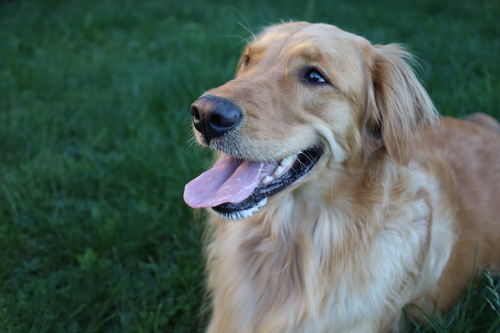

New Addition for Your Furry Friends

Many people bring along their furry friends into their family sessions but this session is completely dedicated to them. Whoe doesn't want a framed picture of their fur babies hung up in their house? We want to give you amazing photos to hold onto and be able to cherish them forever.